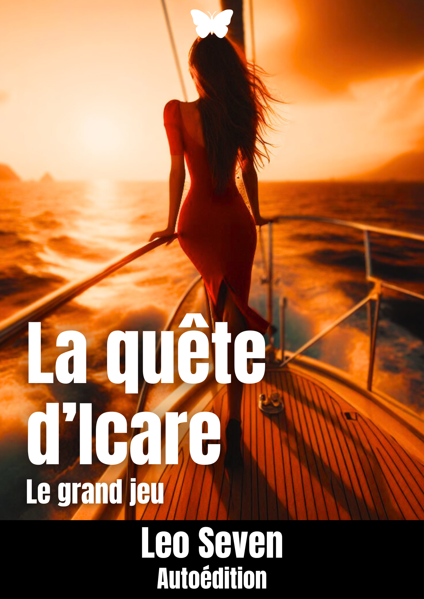
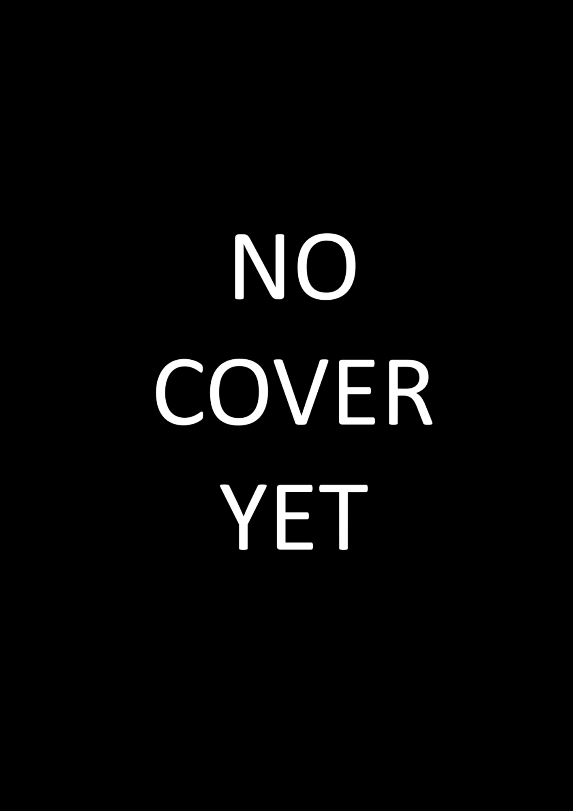

Qui es-tu ?
Je me présente sous le pseudonyme de Leo Seven. J'ai ans et je suis passionné d'écriture depuis ma tendre enfance. Vous trouvez ça cliché ? Eh bien ça l'est et pourtant ce n'est que la vérité.
Que représente l'écriture pour toi ?
L'écriture fais partie intégrante de ma vie depuis que mon esprit s'est décidé à apprendre à réfléchir, écrire et cogiter. Enfant, il m'arrivait de m'enfermer dans ma bulle de la créativité, où je ne voulais absolument voir personne, just me, myself and I. Et dans ces moments là, j'écrivais une suite fictive d'une œuvre déjà existante ou j'écrivais ma propre histoire. Même si, on ne va pas se mentir, à cet âge là, ça ne payait pas de mines, mais il faut un début à tout. J'ai poursuivi cette passion jusqu'au jour où je me suis dis "Tiens, et si tu écrivais carrément un livre entier ?". C'est donc sur mon bureau chez mes parents, la nuit en règne, n'ayant que pour seule source de lumière mon écran d'ordinateur et une lampe de bureau aux teintes chaudes (je sais c'est encore plus cliché mais c'est d'autant plus vrai), que j'écrivais mes premières lignes qui allaient donné naissance à mon premier livre "sérieux", baptisé Hells' Hearts : au cœur de l'enfer. Les bruits des frappes de touches excessifs n'avaient aucunement réveillé ma petite amie, désormais ma femme et étant ma première lectrice, qui dormait à poings fermés juste devant moi. Mais à vrai dire, j'avais déjà griffonné sur un document Word un début d'histoire qui, aujourd'hui, porte le nom de "L'aile de fer".
L'écriture, pour moi, est un moyen de m'exprimer, de m'évader et de pouvoir discuter avec d'autres personnes à travers les dialogues de mes personnages, que je considère, quasiment, comme mes enfants (c'est une façon de voir les choses, je vous l'accorde). Mon esprit est un océan d'idées souvent agité par des vents de réflexion déstabilisant. Ecrire est aussi un moyen pour moi de soulager mon esprit et de pouvoir être moi surmené.
As-tu d'autres centres d'intérêts ?
Au delà de la plume, je m'attèle également à la musique. Je pratique le chant, la guitare, la basse, le piano, la composition musicale par ordinateur, le mixage, le mastering etc etc, on ne va pas en faire tout un plat. Passionné de musiques en tout genre, je suis d'abord fervent de Hard-Rock. Ayant joué dans plusieurs compositions musicales, j'aime à croire que ce qui me va le mieux, c'est la composition elle-même, l'étape où la musique naît.
Je fais également quelques dessins sur tablette graphique, moins maintenant, faute de temps et de priorité. Et pour terminer cette partie, je suis également fan de cinéma et d'informatique.
Un mot pour la fin ?
Eh bien ... bonne visite, et mangez des pâtes !
Ton métier ce n'est pas écrivain ?
Bien sûr que non, enfin. Je peux vous présenter les études et divers corps de métier que j'ai traversés dans ma vie jusqu'à aujourd'hui. Commençons par les études :
- BAC Technologique, que j'ai obtenu
- BTS en vente, que j'ai ... ouais
- Diverses formations inutiles, j'en dirai pas plus c'est déjà largement suffisant
- License en développement web (HTML/CSS/JS/PHP/SQL)
- Doctorat en rien
Voici maintenant mes expériences professionnelles, pareil, toujours dans les grandes lignes :
- Stage en infirmerie, clairement pas pour moi
- Petits jobs d'été en tant qu'ouvrier de la municipalité mais aussi animateur de centre aéré, c'est durant cette dernière expérience que j'ai su que je ne travaillerai plus avec les jeunes
- Facturation en boîte de transport (je ne me souviens plus du nom de poste et ça m'est égal), je l'ai fait durant moins d'un an et j'ai dû à contrecoeur arrêter pour des raisons personnelles ... nan, j'ai été viré comme un malpropre, et c'était mieux ainsi
- Animateur numérique, ce que je suis actuellement, je donne des cours informatique, tablette et smartphone à, en général, des personnes âgées. Vive les vieux !
PS : ah si j'ai fait un jour d'usine aussi, ça a fini en Prison Break à la fin, bref, longue histoire.
Que lis-tu ?
Au risque de vous étonner, pas grand chose. Au fil de ma vie, j'ai lu plusieurs œuvres littéraires plus ou moins captivantes. La première m'ayant marqué était "La Ferme des Animaux" de Georges Orwell. Mais aussi, "Le Chien Jaune" de Simenon, "Le Dernier Jour d'un Condamné" de Victor Hugo, "1984" de Georges Orwell, "La Métamorphose" de Kafka ou même, ne riez pas, "Les 120 Journées de Sodome" du Marquis de Sade.
J'ai aussi lu quelques comics/mangas tels que "Dragon Ball" et "Dragon Ball Z" d'Akira Toriyama (paix à ton âme), mais également toute la série "The Walking Dead" par Robert Kirkman.
As-tu d'autres influences ?
Oui, bien entendu. Niveau musical, je suis influencé par Placebo, Depeche Mode, Nirvana, The Doors, The Pretty Reckless, Iron Maiden, Metallica ou même Hooverphonic. Ma chanson préférée étant "All is full of love" de Björk, une perfection. Sinon, pour en revenir au sujet, je suis assez influencé visuellement par le cinéma et la télévision.
Niveau film et séries, ça donne quoi ?
Alors, je suis passionné de films d'horreur, dramatiques ou de suspense. La saga des films "Saw", "Scream", "Vendredi 13", "Halloween", "Destination Finale", tout ça c'est ma came. Je suis aussi fan d'autres films comme "Fight Club", "Pulp Fiction", "Predator" et j'en passe, mais également de la saga "Star Wars", mais ça c'est normal, non ?
Ensuite, les séries qui m'ont marqué et influencé sont d'abord "Breaking Bad/Better Call Saul", "Scream" (again), "The Walking Dead", "The Mandalorian", "You", "Elite" (oui, "Elite"), "Sex Education" (on part en couilles), "La Casa de Papel", "Vikings" ou encore "Squid Game".
Tu ne rigoles donc jamais ?
Bien sûr que si, je suis même le premier à rire. Pour me divertir, je regarde les classiques du cinéma français tels que "Le Gendarme", "Le Dîner de Cons" ou autres. Mais pour me détendre, je préfère me poser devant des séries telles que "How I Met Your Mother", "Malcolm", "Brooklyn 99" ou encore même "The Big Bang Theory".
Oeuvres
 La quête d'Icare, le grand jeu (30/08/2022)
La quête d'Icare, le grand jeu (30/08/2022)

Style : Horreur et Drame - 193 pages / 27997 mots
Une mystérieuse invitation à participer à un jeu sur le thème « Icare » apparaît sur un compte Instagram de faible réputation. Celle-ci promet une récompense de 1,5 million de dollars. Le problème est le manque d’information sur la réelle quête à réaliser.
Les plus téméraires auront l’honneur de trouver le lieu de rendez-vous pour participer à la fameuse quête d’Icare. Grand jeu organisé par un certain « Zéro », les participants sont loin d’imaginer à quel genre de jeu ils s'apprêtent à jouer et n’oublieront jamais cette aventure, pour ceux qui auront la chance de rester en vie jusqu’à la fin de cette quête sordide.
Statut : Terminé
Place dans la saga : 1/3
Les ailes de la mort (04/06/2024)

Style : Horreur et Drame - 193 pages / 27997 mots
Ce livre est la suite directe de "La quête d'Icare, le grand jeu". Pour éviter le spoil, aucun résumé ne sera affiché.
Statut : En cours
Place dans la saga : 2/3
Le dernier naufrage (Date inconnue)
Style : Horreur et Drame - 193 pages / 27997 mots
Ce livre est la suite directe de "Les ailes de la mort". Pour éviter le spoil, aucun résumé ne sera affiché.
Statut : En projet
Place dans la saga : 3/3